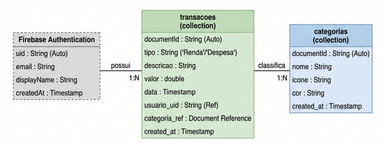

SEMANA 4 – Lógica Condicional e Modelagem de Dados
Nesta semana, você aprenderá a modelar os dados do seu projeto, definindo as coleções (collections) e os campos (fields) que serão criados diretamente no Firebase — o banco de dados em nuvem integrado ao FlutterFlow.
A modelagem de dados é a etapa em que definimos quais informações o sistema vai armazenar e como elas se relacionam entre si. Um modelo bem construído facilita todo o desenvolvimento posterior e evita erros difíceis de corrigir depois.
Fonte: Chen, P. (1976). The Entity-Relationship Model; Firebase Documentation. |
4.1 Conceitos de Modelagem de Dados
|
Entidade: representa um objeto do mundo real sobre o qual queremos armazenar informações. Exemplos: Transação, Categoria. Em bancos NoSQL Orientados a Documentos como o Firestore, cada entidade vira uma coleção (collection), e cada registro vira um documento JSON. |
| Conceito | Descrição | Exemplo |
|---|---|---|
| Entidade / Coleção | Objeto ou conceito do mundo real (no Firestore, uma collection) | usuarios, categorias, transacoes |
| Atributo / Campo | Propriedade/característica de uma entidade (no Firestore, um field do documento) | nome, e-mail, data_nascimento |
| Documento | Registro individual dentro de uma coleção (equivale a uma "linha" em bancos relacionais) | um documento na coleção transacoes |
| Referência | Campo que armazena o ID de um documento de outra coleção (equivale à chave estrangeira) | categoria_ref em transacoes |
| Relacionamento | Associação entre duas coleções via referência | Usuário possui Transações |
4.2 Cardinalidade dos Relacionamentos no NoSQL
Em bancos relacionais tradicionais, a cardinalidade (1:1, 1:N, N:M) define como tabelas se unem usando chaves estrangeiras. No NoSQL Orientado a Documentos, a cardinalidade ajuda a tomar uma decisão de design crucial: devemos vincular (referência) ou embutir (subcoleção/array)?
| Tipo | Notação | Exemplo |
|---|---|---|
| Um para Um (1:1) | 1 — 1 | Um País possui uma única Capital |
| Um para Muitos (1:N) | 1 — N | Um Usuário possui muitas Transações |
| Muitos para Muitos (N:M) | N — M | Um Produto pertence a muitas Categorias; uma Categoria tem muitos Produtos |
|
No Firestore, não existem JOINs automáticos como em bancos SQL. Para
relacionamentos muitos-para-muitos (N:M), usamos um array de
referências dentro do documento ou uma subcoleção.
Por exemplo, um documento de Produto pode ter um campo
|
4.3 Planejando as Coleções do Projeto
Com o Firebase/Firestore, não é necessário usar uma ferramenta externa de modelagem como brModelo ou MySQL Workbench. As coleções (collections) e seus campos (fields) serão criados diretamente no FlutterFlow quando configurarmos a integração com o Firebase na Semana 6. Porém, é essencial planejar a estrutura antes — definindo quais coleções existirão, quais campos cada uma terá e como elas se relacionam.
Passo a Passo para planejar as coleções
- Liste todas as entidades identificadas nos seus requisitos funcionais.
- Para cada entidade, defina seus campos (nome, tipo de dado, obrigatório?).
- Identifique os relacionamentos entre as coleções.
- Defina a cardinalidade de cada relacionamento.
- Decida como implementar os relacionamentos: Document Reference (campo de referência) ou subcoleção.
- Documente tudo em uma tabela ou diagrama simples.
|
O brModelo é uma ferramenta de modelagem para bancos relacionais (SQL). Como o Firestore é um banco NoSQL baseado em documentos, a modelagem é diferente: não existem tabelas com colunas fixas, chaves estrangeiras formais ou JOINs. Em vez disso, as coleções e campos são criados diretamente no ambiente do FlutterFlow (via integração Firebase), tornando o processo mais visual e prático. |
Exemplo: Coleções do App Financeiro
Para o app FinanCampus, as coleções e relacionamentos seriam:
- categorias (nome, icone, cor) — 1 categoria classifica N transações
- transacoes (tipo, descricao, valor, data, usuario_uid, categoria_ref) — cada documento é uma renda ou uma despesa
|
O Firebase Authentication gerencia automaticamente os dados de
login (e-mail, senha, UID). Quando um usuário se cadastra, o Firebase cria
um registro interno com um UID (User ID) único.
O campo Por isso, não precisamos criar uma coleção de usuários
no nosso modelo inicial — o Firebase Authentication cuida disso.
Se no futuro precisar armazenar dados extras do usuário
(foto de perfil, preferências), você pode criar uma coleção
|
|
Em vez de criar duas coleções quase idênticas (despesas
e receitas), usamos uma coleção única
|
A Figura 4.2 apresenta a estrutura de coleções do app FinanCampus, com as entidades, seus campos e os relacionamentos entre elas.

|
Nomeie as coleções e campos em letras minúsculas e sem acentos,
usando underscores para separar palavras (snake_case). Por exemplo:
|
Por Que Separar os Dados em Coleções? — Normalização
Um dos objetivos da modelagem é garantir que os dados não se repitam desnecessariamente no banco. Esse processo se chama normalização. Imagine uma coleção única que armazenasse, em cada documento de transação, o nome e o e-mail do usuário e o nome da categoria. Se a categoria "Alimentação" for renomeada para "Comida", você teria que atualizar centenas de documentos. Ao separá-la em uma coleção própria e usar uma referência, basta alterar um único documento.
A Figura 4.3 compara um design sem normalização ("coleção plana") com o design normalizado equivalente, mostrando como as referências eliminam a redundância.

4.4 Entregável da Semana
|
Na próxima semana, você irá detalhar os campos de cada coleção (tipos de dados, validações) e preparar a documentação necessária para criar as coleções no Firebase na Semana 6.
4.5 Estudo de Caso: FinanCampus
Veja o modelo de dados que o grupo do FinanCampus criou nesta semana.
|
Coleções identificadas:
Relacionamentos:
Decisão do grupo: usar uma única coleção
Distribuição dos CRUDs (definida nesta semana, após o modelo):
|